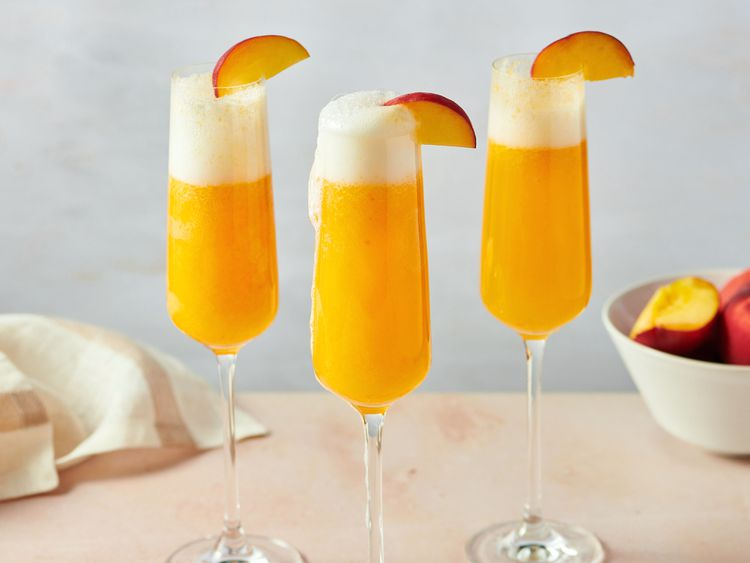

Peach Bellini

Peach Bellini cocktails
Peach Bellini is an easy cocktail to make with just two ingredients; peach puree and chilled
Prosecco. It's great for a special brunch or to make with fresh peaches in summer!
Prep Time: 5 mins
Total Time: 5 mins
Servings: 1
Yield: 1 Bellini
Ingredients
- ¼ cup pureed peaches
- 4 fluid ounces cold Prosecco or Champagne
- 1 fresh peach slice for garnish
Steps
- Gather all ingredients.
- Pour peach puree into a fluted glass; top with Prosecco or Champagne.
- Garnish with a slice of peach. Enjoy!
Return to main page